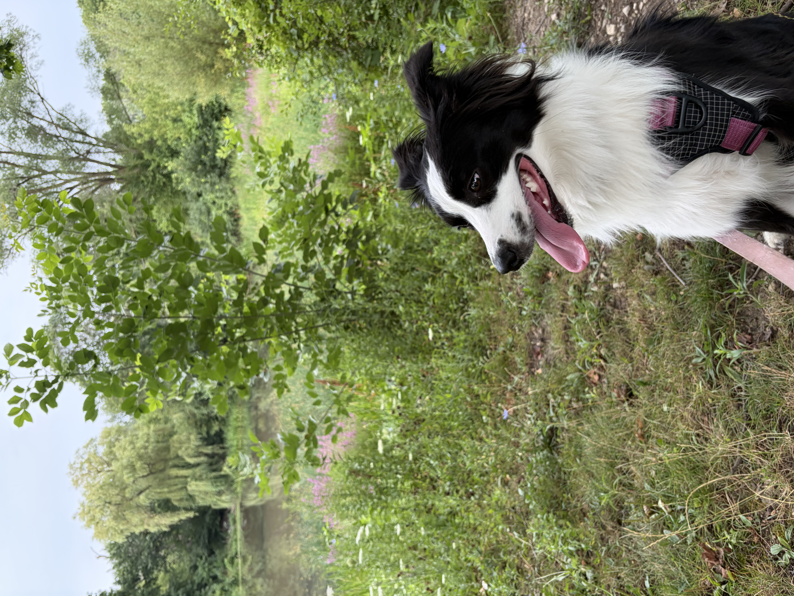

History
Here I will talk about the history of Australian Shepherds.
Temperament
Here I will talk about the temperament of Australian Shepherds.
Appearance
Here I will talk about the fur and eye colors Australian Shepherds can have, as well as their size and fur type.
Most Popular Colors
These are the rankings for most popular coat colors from most popular to least popular.
- Blue Merle
- Red Merle
- Red Tri
- Black Tri
- Bicolor
- Solid Colors
Common Health Issues
This is a list of some of the health conditions that Aussies are prone to.
- Autoimmune Thyroiditis
- Hemangiosarcoma
- Lymphoma
- Cataracts
- Elbow Dysplasia
- Epilepsy
- Hip Dysplasia
- Multi-Drug Resistance 1 (MDR1)
- Moderate to Severe Allergies